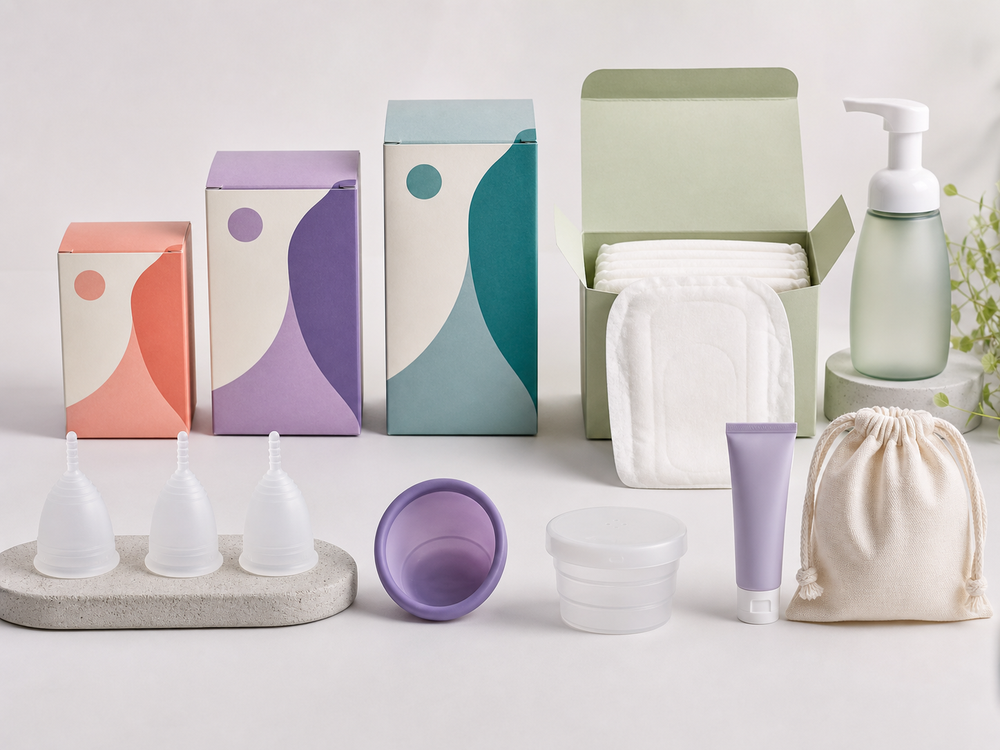
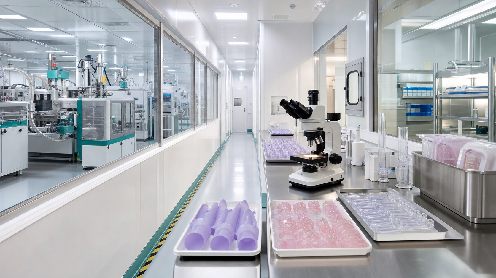

Menstrual Cup Series
Classic, Soft, and Sport designs in S/M/L sizing, with medical-grade LSR, EO sterilization, and kit packaging.
- 20-30 ml Classic range
- Shore A 15 Soft option
- Sport cup with anti-leak ring
Xi'an Yuji Biotechnology Co., Ltd.
YUJI 悦己 develops and manufactures menstrual cups, discs, intimate care, sanitary pads, and private-label programs from a Xi'an-based silicone and hygiene production base.
YUJI turns laboratory-grade material expertise into accessible menstrual and intimate care products for distributors, DTC brands, retailers, clinics, and e-commerce operators.
The name 悦己 means choosing comfort and confidence for oneself. The company translates that idea into safer materials, practical customization, and buyer-ready export documentation.
Product Center
Core SKUs are designed for export programs, white-label packs, bundle kits, and market-specific compliance review.

Classic, Soft, and Sport designs in S/M/L sizing, with medical-grade LSR, EO sterilization, and kit packaging.
Standard, large, and reusable disc concepts for North American and European growth channels.
Private-label herbal wash, gel, and regional-market formulations with GMPC-oriented production workflows.
Organic cotton, bamboo charcoal, anion pads, sterilizing cups, storage pouches, wipes, and cleaning kits.
OEM / ODM
Confirm target market, product format, size, color, packaging, order volume, and compliance requirements.
Use existing molds for speed or develop customized designs with silicone, packaging, and care-product engineers.
Run sample lots, verify dimension, hardness, packaging fit, sterilization plan, and buyer approval records.
Complete production, QC, sterilization validation, document pack, carton labeling, and export handoff.

Manufacturing & Quality
YUJI operates silicone molding, sanitary pad production, liquid filling, sterilization, and laboratory inspection workflows from its Xi'an/Xixian manufacturing base.
Compliance Portfolio
Certification scans and lab reports should be reviewed during buyer due diligence before any regulated-market claim is used.
Priority Markets
Amazon, DTC, pharmacy retail pilots, and premium menstrual cup/disc positioning.
CE-oriented buyer review, sustainability messaging, and distributor-led category launches.
Halal-sensitive intimate care bundles and trade distributor programs.
Shopee, Lazada, and value-focused mixed SKUs for fast trial and repeat ordering.
Buyer FAQ
Products are made with medical-grade silicone and are supported by biocompatibility-oriented testing records for buyer review.
S usually targets lighter flow or younger users, M is a balanced mainstream size, and L supports higher flow or postpartum positioning.
Yes. Sample packs can be prepared for product, packaging, and market-fit review. Express freight is normally paid by the buyer.
Regular orders are typically planned around 15-20 working days after approval; urgent programs may be reviewed case by case.
Yes. Existing structures support lower-risk launch speed; custom molds, colors, packs, and selected formulations can be developed for larger programs.
Contact
Share your product category, target market, expected volume, and compliance needs so the sales team can prepare the right quotation pack.